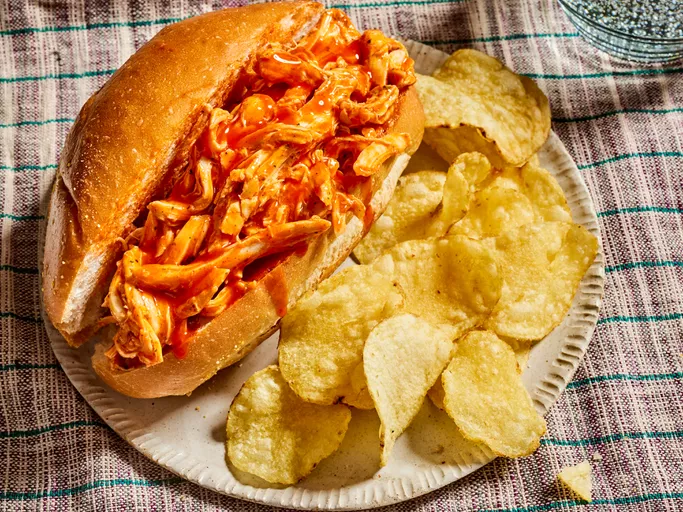

Slow Cooker Buffalo Chicken Sandwiches

Ingredients
- 4 skinless, boneless chicken breast halves
- 1 (17.5 fluid ounce) bottle of Buffalo Wing Sauce, divided
- 1/2 (1 ounce) package dry ranch salad dressing mix
- 2 tablespoons butter
- 6 hoagie rolls, split lengthwise
Steps
- Place chicken breasts into a slow cooker; pour in 3/4 of the wing sauce and ranch dressing mix.
- Cover and cook on Low for 6 to 7 hours.
- Shred chicken in the cooker with two forks and stir in the butter.
- Pile shredded chicken into hoagie rolls and top with remaining Buffalo Sauce.
- Serve and enjoy!